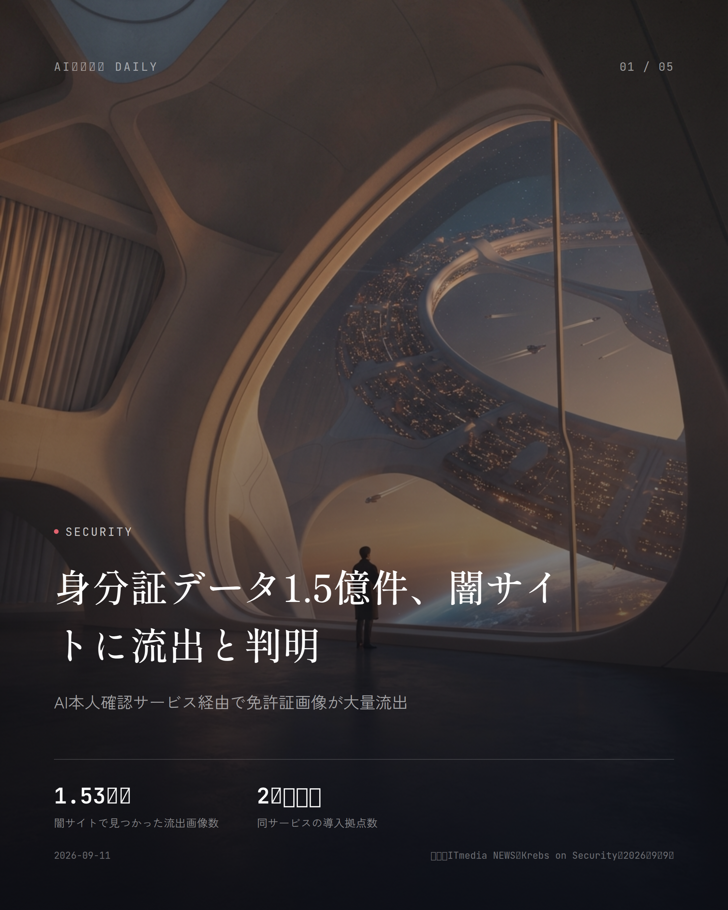
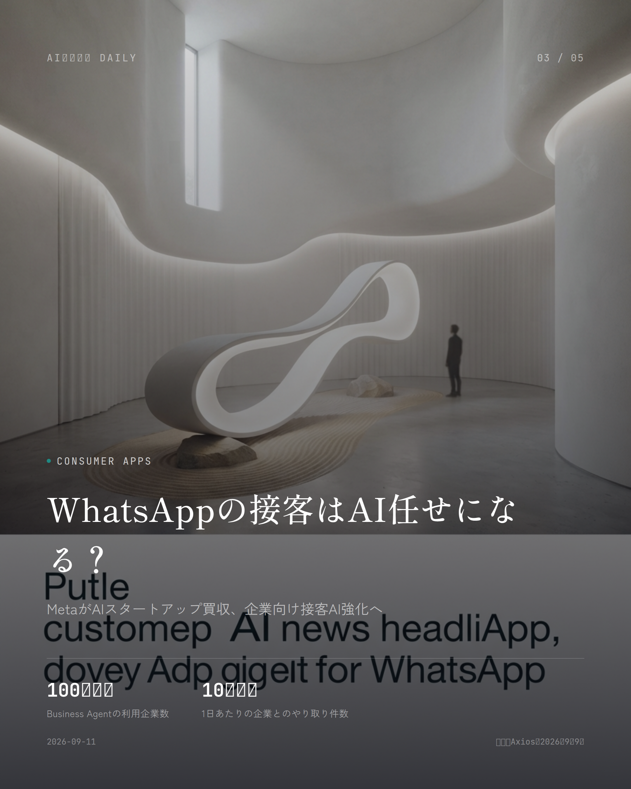
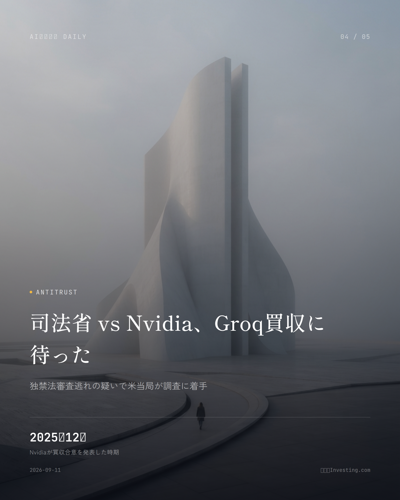
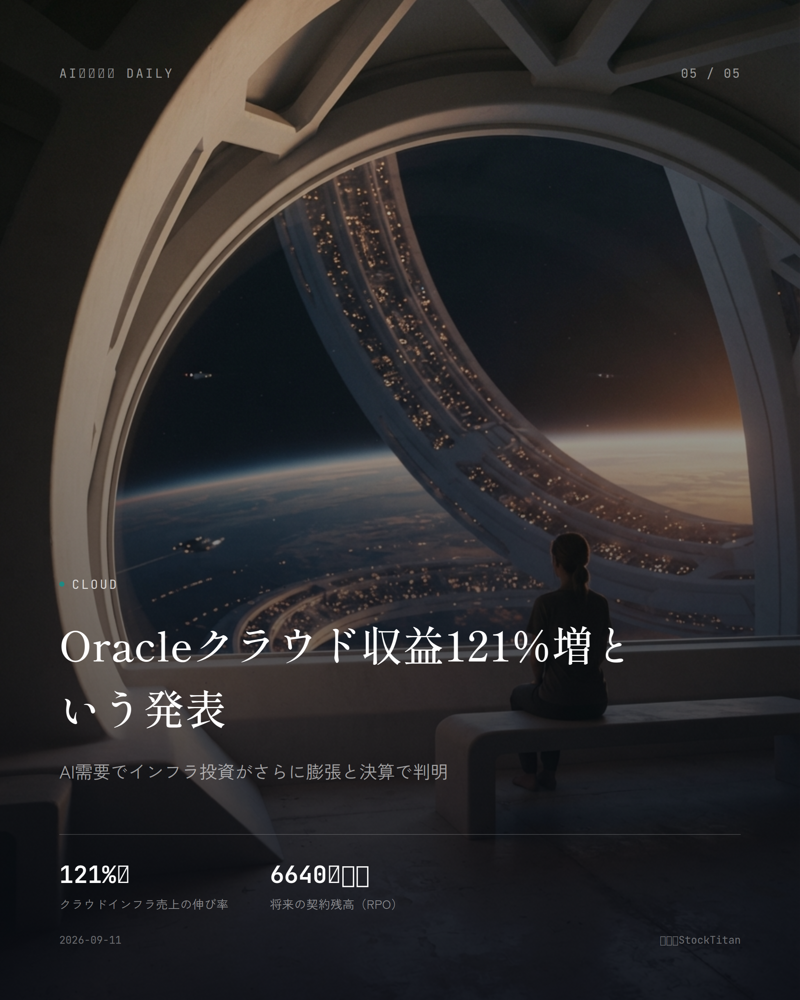

これは2026-09-11時点のアーカイブページです。最新のニュースはこちら
本サイトはアフィリエイトプログラムによる収益を得ている場合があります。
本サイトはGoogle AdSense等の広告配信サービスを利用しています。

Security
約2分で読める
身分証データ1.5億件、闇サイトに流出と判明
AI本人確認サービス経由で免許証画像が大量流出
米国とカナダの運転免許証をスキャンした画像が1億5300万枚以上、ダークウェブで売られているのが見つかった。セキュリティジャーナリストのブライアン・クレブス氏が出所を追ったところ、レンタカー大手や小売チェーンが本人確認に使っていたサービス会社から漏れたものらしいとわかった。
流出元とみられるidscan.netは「なりすまし防止、年齢確認、セキュリティとコンプライアンスのためのアクセス管理に照準を絞った最先端のAI本人確認プラットフォーム」を謳う会社だ。Hertzやマリファナ販売チェーンPlanet13、さらにTarget、FedEx、Motorola Solutionsといった米大手も導入しており、世界2万カ所あまりで月間21万回超の身分証確認に使われていたという。
FBIニューオーリンズ支部がすでに捜査に乗り出している。被害者にはクレブス氏本人や米国防長官まで含まれていたというから穏やかではない。犯人側は自分たちの手口を証明するため、よりによってクレブス氏の免許証をサンプルとして提示していたそうだ。
なぜ重要か
店やレンタカーの窓口で何気なく見せている運転免許証。それがAI本人確認サービスの裏側で長期間保管され、狙われる対象になっている実態が浮き彫りになった。身分証の画像は偽造やなりすまし詐欺に直結するだけに、提示した情報がどこまで安全に扱われているか、そろそろ意識してもいい頃かもしれない。
出典：ITmedia NEWS／Krebs on Security、2026年9月9日
Economy
約1分で読める
AIで失業14%も、Anthropicが経済試算を公開
2030年の雇用とGDPへの影響を試算するツール登場
Anthropicが、AIが2030年までに米国経済にどう影響するかを自分で試算できる対話型ツールを公開した。10,980人の米国人への調査と、社内エコノミストチームの分析をもとに、いくつものシナリオを比較できる仕組みになっている。
控えめなシナリオでは、2030年のGDPはAIがない場合よりわずか1.6%高くなる程度で、成長率は年2.4%、雇用市場への影響もほとんど見られない。一方、最も急進的なシナリオではGDPが32.4%も押し上げられ、成長率は年15.4%に達するものの、その代償として失業率は11.9%まで跳ね上がると試算されている。
Anthropicはどのシナリオが実現するか確率を割り振ってはいない。実際にどうなるかは、AIの能力向上のスピード、企業の導入度合い、そして失業した人が次の仕事を見つけられるかどうか次第で、この幅のどこかに落ち着くだろうとしている。
なぜ重要か
生成AIの普及は「便利になる」で済む話ではなく、自分の仕事や収入にどれほど響くかを具体的な数字で突きつけた、初めての大規模試算だ。楽観と悲観、その振れ幅を知っておくことが、これからのキャリアの考え方に直結してくる。
出典：NPR、2026年9月9日

Consumer Apps
約1分で読める
WhatsAppの接客はAI任せになる？
MetaがAIスタートアップ買収、企業向け接客AI強化へ
Metaがスウェーデンのスタートアップ、Stilla.aiを買収したことが分かった。狙いは、WhatsAppやMessenger、Instagram上で企業が顧客対応や商品案内、決済までAIに丸ごと任せられる「Meta Business Agent」の開発を加速させることだ。
Meta Business Agentはすでに100万を超える企業が使っており、Metaのメッセージアプリ上では1日あたり10億件を超える企業とのやり取りが行われているという。
Stilla.aiは元Shopify幹部らが2024年にストックホルムで立ち上げた会社で、Slack、GitHub、Notionなど複数の業務ツールをまたいでAIエージェントに文脈を持たせ、仕事を任せる技術を開発してきた。今回の買収で、この技術がMetaの接客AIに組み込まれる見通しだ。
なぜ重要か
普段使っているWhatsAppやInstagramのお店アカウントとのやり取りが、AI接客に置き換わる流れが一段と加速する。問い合わせや注文をしたつもりが、実は相手が人間ではなくAIだった、という場面がこれからもっと増えていきそうだ。
出典：Axios、2026年9月9日

Antitrust
約1分で読める
司法省 vs Nvidia、Groq買収に待った
独禁法審査逃れの疑いで米当局が調査に着手
米ニューヨーク・タイムズ紙によると、米司法省がNvidiaによるAIチップ企業Groqの買収について、独占禁止法の審査を回避する目的で契約が組み立てられたのではないかと調査しているという。関係者2人の話として報じられている。
調査はNvidiaが昨年12月にGroqとの買収合意を発表した直後から始まり、司法省はその後Nvidiaに正式な情報提供要求を送っている。当局が不正行為を認めればNvidiaに罰金が科される可能性もあるが、今のところ買収自体が白紙に戻るとは見られていない。
なぜ重要か
AI向け半導体で圧倒的なシェアを握るNvidiaの買収戦略に、規制当局のメスが入った格好だ。AIチップの価格や供給体制、ひいてはAIサービス全体のコスト構造にまで波及しかねない動きである。
出典：Investing.com（ニューヨーク・タイムズ紙報道）、2026年9月10日

Cloud
約1分で読める
Oracleクラウド収益121%増という発表
AI需要でインフラ投資がさらに膨張と決算で判明
Oracleが発表した2027会計年度第1四半期決算では、売上高が前年同期比30%増の193億ドル。うちクラウドインフラ部門の売上高は121%増の74億ドルに達した。
同四半期だけで新たに300億ドルを超えるAIクラウド契約を積み増し、将来の契約残高（RPO）は2090億ドル増えて6640億ドルに膨らんだ。同社はAIクラウド向けに30万基を超えるGPUを納入済みで、前四半期からほぼ3倍の供給能力を実現したとしている。
なぜ重要か
生成AIの学習や利用を支えるクラウドインフラの争奪戦が、決算という具体的な数字ではっきり表れた格好だ。AI企業のコスト構造、そして今後のサービス価格にも波及しかねない動きである。
出典：StockTitan（AI Weekly経由）、2026年9月10日
AI Safety
AI Safety
約1分で読める
OpenAI安全委員会に著名研究者が参加
AIリスクを指摘してきた研究者が監督体制に加わる
AIアラインメント研究の第一人者、ポール・クリスティアーノ氏がOpenAI Foundationの理事会と、安全性を監督する「Safety and Security Committee」に加わることが分かった。
クリスティアーノ氏はAI安全研究機関Alignment Research Centerの創設者で、OpenAI Group PBCの取締役会にも議決権を持たないオブザーバーとして参加するという。
なぜ重要か
これまで外部からAIの危険性を指摘し続けてきた研究者本人が、OpenAIの安全性を監督する側に回った格好だ。AGI開発競争が過熱する中、社内の「安全のブレーキ役」がどこまで実効性を持てるか、注目したい。
出典：TLDR Newsletter、2026年9月9日
Infrastructure
Infrastructure
約1分で読める
マイクロソフト、データセンター3倍増計画
2032年までに容量を12GWから38GW超へ拡大
Microsoftが2032年までに、データセンターの総容量を現在の12ギガワットから38ギガワット超へ拡大する計画を持っていることが分かった。うち3分の1はAI専用の設備になるという。
生成AIの学習や推論に必要な計算資源の確保は各社にとって急務となっており、MicrosoftもOpenAIをはじめとするAIサービスの需要増を見込んで、大規模な設備投資でインフラ拡張を進める構えだ。
なぜ重要か
私たちが使うAIチャットや検索、Officeアプリの裏では、電力を大量に食うデータセンターの拡張競争が続いている。今後の電気料金や地域のインフラ整備にまで波及しかねない、そのくらいの規模の投資であることが見えてきた。
出典：AI Weekly、2026年9月10日
先頭に戻る